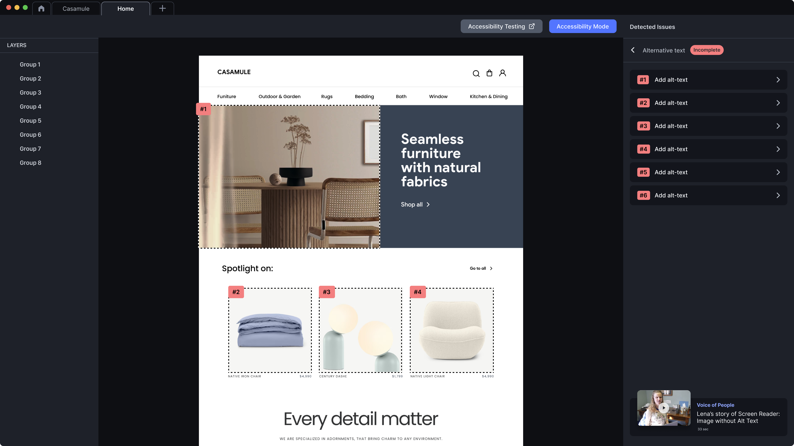
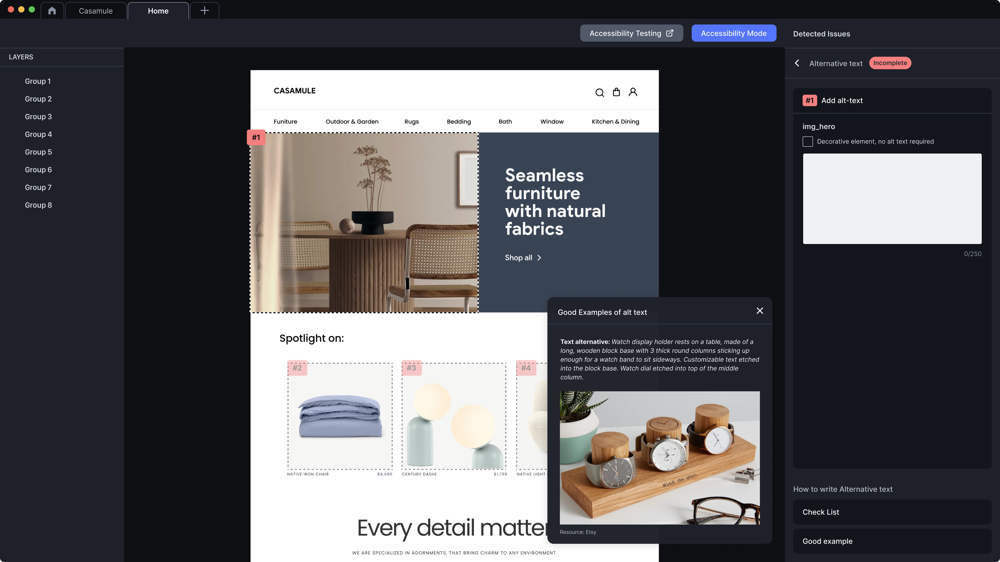
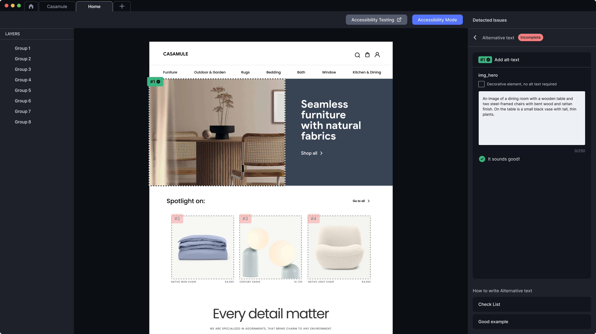

Problem
Images without alt text are invisible to screen-reader users, AT announces “[unlabeled graphic]” or, worse, the file name read out as URL fragments. But verbose alt text on decorative images (icons next to text labels, brand flourishes) wastes user time on every page, every visit. Both failure modes feel the same to the user: noise.
The fix isn’t “always write alt text.” It’s deciding which of three roles each image plays and writing alt accordingly.
Pattern
Three states. Every image gets exactly one.
- Meaningful, the image conveys information not present in surrounding text. Write alt that conveys the same information. Match purpose, not appearance. A graph isn’t alt=“a line chart with red and blue lines”; it’s alt=“Revenue grew 12% Q1 to Q4 2024.”
- Decorative, the image adds visual rhythm, brand feel, or pure decoration. Use
alt=""(empty, never omitted). AT skips it; sighted users see it; nobody loses. - Functional, the image is itself the actionable element (icon-only button, image-as-link). Alt describes the action, not the icon. A play-shaped triangle on a video button is
alt="Play video", notalt="Triangle pointing right".
Special cases:
- Image with adjacent text label: typically decorative (the text label carries the meaning). Avoid duplicating it in alt.
- Logo: meaningful in the header (alt = company name); decorative when it appears as a flourish elsewhere.
- Complex image (chart, diagram): short alt + long description (
aria-describedbypointing to a hidden full description, or a visible “view data” link).
Visual examples



Code
<!-- Meaningful: alt conveys the information -->
<img
src="quarterly-revenue.png"
alt="Revenue grew 12% Q1 to Q4 2024."
>
<!-- Decorative: empty alt; never omitted -->
<img src="brand-flourish.svg" alt="">
<!-- Functional: alt is the action, not the appearance -->
<button>
<img src="play.svg" alt="Play video">
</button>
<!-- Icon-button alternative: SVG with aria-label on the button -->
<button aria-label="Play video">
<svg aria-hidden="true" focusable="false">...</svg>
</button>
<!-- Adjacent text label: image is decorative -->
<a href="/cart">
<img src="cart.svg" alt=""> Cart
</a>
<!-- Complex image: short alt + long description -->
<img
src="org-chart.png"
alt="Engineering org chart, 12 teams"
aria-describedby="org-chart-desc"
>
<p id="org-chart-desc">
Full description: ...
</p>Annotation
Tag each image slot in the design with its state and either the alt text or the rationale for empty alt.
Image: hero photograph
State: meaningful
Alt: "Three customers reviewing the dashboard together"
Image: brand flourish, top-right
State: decorative
Alt: "" (empty)
Image: play icon on video card
State: functional
Alt: "Play video"WCAG mapping
- 1.1.1 Non-text Content (opens in new tab) A text alternative for non-text content
- 4.1.2 Name, Role, Value (opens in new tab) A functional images need an accessible name
Related patterns
- Inclusive imagery (#04), sourcing the image; alt text is how it’s consumed
- Structure landmarks (#07), image semantics within the surrounding content landmarks